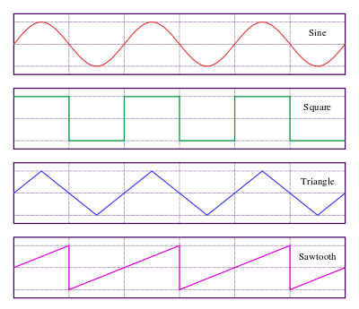

<body>
<h1>Pequeno Teclado Digital</h1>
Formato de Onda: 
<select> 
	<option value='sine'>Senoidal</option>
	<option value='square'>Quadrada</option>
	<option value='triangle'>Triangular</option>
	<option value='sawtooth'>Dente de serra</option>
</select>
<br>

<script>
//document.body.style.background = '#285a46'; // muda a cor de fundo
var formato = document.querySelector('select'); // opção de formato da onda
var actx = new AudioContext(); // contexto de audio
var tecla; // variável para guardar temporariamente os botões enquanto são criados
var teclas = []; // guarda os botões das notas
var notas = [// nome das notas, suas frequências, teclas, osciladores e ganho
			{nome:'C4', valor: 261.6, key: 'a', oscilador: actx.createOscillator(), ganho: actx.createGain()},
			{nome:'C4#', valor: 277.2, key: 'w',  oscilador: actx.createOscillator(), ganho: actx.createGain()},
			{nome:'D4', valor: 293.7, key: 's',  oscilador: actx.createOscillator(), ganho: actx.createGain()},
			{nome:'D4#', valor: 311.1, key: 'e',  oscilador: actx.createOscillator(), ganho: actx.createGain()},
			{nome:'E4', valor: 329.6, key: 'd',  oscilador: actx.createOscillator(), ganho: actx.createGain()},
			{nome:'F4', valor: 349.2, key: 'f',  oscilador: actx.createOscillator(), ganho: actx.createGain()},
			{nome:'F4#', valor: 370.0, key: 't',  oscilador: actx.createOscillator(), ganho: actx.createGain()},
			{nome:'G4', valor: 392.0, key: 'g',  oscilador: actx.createOscillator(), ganho: actx.createGain()},
			{nome:'G4#', valor: 415.3, key: 'y',  oscilador: actx.createOscillator(), ganho: actx.createGain()},
			{nome:'A4', valor: 440.0, key: 'h',  oscilador: actx.createOscillator(), ganho: actx.createGain()},
			{nome:'A4#', valor: 466.2, key: 'u',  oscilador: actx.createOscillator(), ganho: actx.createGain()},
			{nome:'B4', valor: 493.9, key: 'j',  oscilador: actx.createOscillator(), ganho: actx.createGain()},
			{nome:'C5', valor: 523.3, key: 'k',  oscilador: actx.createOscillator(), ganho: actx.createGain()},
			{nome:'C5#', valor: 554.4, key: 'o',  oscilador: actx.createOscillator(), ganho: actx.createGain()},
			{nome:'D5', valor: 587.4, key: 'l',  oscilador: actx.createOscillator(), ganho: actx.createGain()},
			{nome:'D5#', valor: 622.3, key: 'p',  oscilador: actx.createOscillator(), ganho: actx.createGain()},
			{nome:'E5', valor: 659.3, key: 'ç',  oscilador: actx.createOscillator(), ganho: actx.createGain()}
			];
			
for (var i = 0, p = 0; i < notas.length; i++, p += 5.88) { 
	// configura cada oscilador pertencente a cada nota
	notas[i].oscilador.frequency.value = notas[i].valor;
	notas[i].oscilador.start(0);
	// cria botões
	tecla = document.createElement('div');
	// configura o estilo
	tecla.style.background = '#efefef';
	tecla.style.position = 'absolute';
	tecla.style.width = '5.88%';
	tecla.style.top = '70%';
	tecla.style.left = String(p) + '%';
	tecla.style.border = 'solid';
	tecla.style.textAlign = 'center';
	// acrescenta o conteúdo
	tecla.innerHTML = notas[i].nome + '<br/><b>' + notas[i].key + 
					  '</b><br/>' + notas[i].valor + 'Hz';
	// insere no corpo do documento
	document.body.appendChild(tecla);
	// acrescenta no array de teclas
	teclas.push(tecla);	
}

window.addEventListener('keydown', function(e) {
	var tecla = e.key;
	var index_botao;
	switch (tecla) {
		case 'a': index_botao = 0; play(notas[0], index_botao); break;
		case 'w': index_botao = 1; play(notas[1], index_botao); break;
		case 's': index_botao = 2; play(notas[2], index_botao); break;
		case 'e': index_botao = 3; play(notas[3], index_botao); break;
		case 'd': index_botao = 4; play(notas[4], index_botao); break;
		case 'f': index_botao = 5; play(notas[5], index_botao); break;		
		case 't': index_botao = 6; play(notas[6], index_botao); break;
		case 'g': index_botao = 7; play(notas[7], index_botao); break;
		case 'y': index_botao = 8; play(notas[8], index_botao); break;
		case 'h': index_botao = 9; play(notas[9], index_botao); break;
		case 'u': index_botao = 10; play(notas[10], index_botao); break;
		case 'j': index_botao = 11; play(notas[11], index_botao); break;
		case 'k': index_botao = 12; play(notas[12], index_botao); break;
		case 'o': index_botao = 13; play(notas[13], index_botao); break;
		case 'l': index_botao = 14; play(notas[14], index_botao); break;
		case 'p': index_botao = 15; play(notas[15], index_botao); break;
		case 'ç': index_botao = 16; play(notas[16], index_botao); break;
	}
}, false);

window.addEventListener('keyup', function(e) {
	var tecla = e.key;
	switch (tecla) {
		case 'a': index_botao = 0; stop(notas[0], index_botao); break;
		case 'w': index_botao = 1; stop(notas[1], index_botao); break;
		case 's': index_botao = 2; stop(notas[2], index_botao); break;
		case 'e': index_botao = 3; stop(notas[3], index_botao); break;
		case 'd': index_botao = 4; stop(notas[4], index_botao); break;
		case 'f': index_botao = 5; stop(notas[5], index_botao); break;		
		case 't': index_botao = 6; stop(notas[6], index_botao); break;
		case 'g': index_botao = 7; stop(notas[7], index_botao); break;
		case 'y': index_botao = 8; stop(notas[8], index_botao); break;
		case 'h': index_botao = 9; stop(notas[9], index_botao); break;
		case 'u': index_botao = 10; stop(notas[10], index_botao); break;
		case 'j': index_botao = 11; stop(notas[11], index_botao); break;
		case 'k': index_botao = 12; stop(notas[12], index_botao); break;
		case 'o': index_botao = 13; stop(notas[13], index_botao); break;
		case 'l': index_botao = 14; stop(notas[14], index_botao); break;
		case 'p': index_botao = 15; stop(notas[15], index_botao); break;
		case 'ç': index_botao = 16; stop(notas[16], index_botao); break;
	}
}, false);

function play(nota, index_botao) {
	actx.resume();
	nota.oscilador.type = formato.value;
	nota.oscilador.connect(nota.ganho);
	nota.ganho.connect(actx.destination);
	teclas[index_botao].style.background = '#000000';
	teclas[index_botao].style.color = '#efefef';	
	console.log(nota.nome);
}

function stop(nota, index_botao) {
	nota.oscilador.disconnect();
	teclas[index_botao].style.background = '#efefef';
	teclas[index_botao].style.color = '#000000';	
}
</script>
</body>